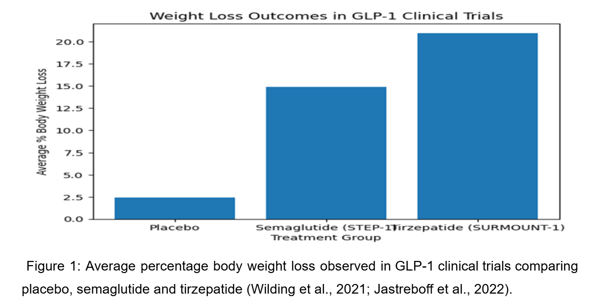
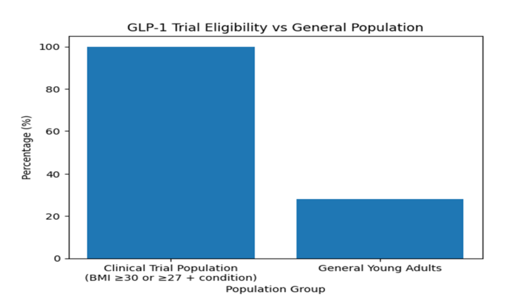
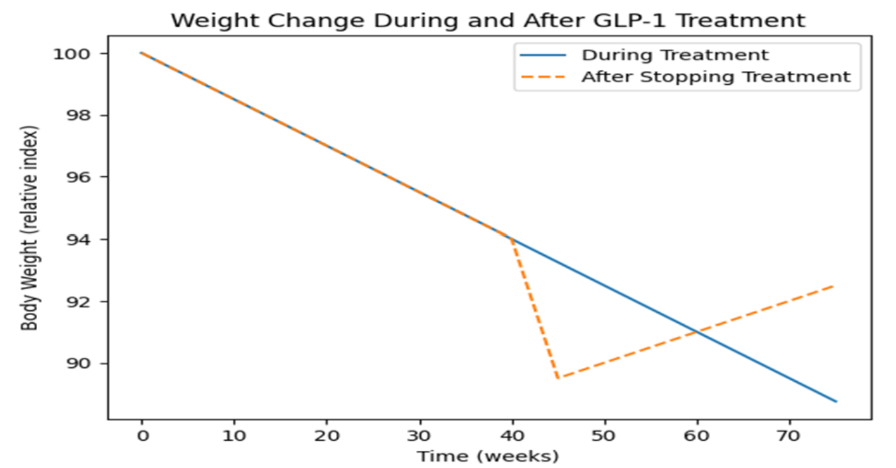

Business
Introduction
GLP-1 receptor agonists have rapidly evolved from treatments for type 2 diabetes into highly profitable products within the global weight-loss market (Recasens-Alvarez et al., 2025; J.P. Morgan, 2026). This reflects a wider shift in healthcare, where medical innovation is increasingly shaped by commercial investment, branding, and consumer demand (IQVIA, 2025). While these drugs demonstrate clear clinical effectiveness and growing accessibility (Wilding et al., 2021), their expansion also raises important concerns about the influence of profit-driven models in healthcare (The King’s Fund, 2025), particularly for younger adults exposed to them through digital platforms.
The Rise of the Weight-Loss Drug Market
The UK market for GLP-1 weight-loss drugs is projected to grow from a revenue base of US $715.1 million by 2030, representing a compound annual growth rate (CAGR) of 17.7% (Grand View Research, 2026). Globally, projections are even more substantial, with some analysts estimating the obesity therapeutics market could exceed $200 billion by 2030 (J.P. Morgan, 2026). This rapid expansion is largely concentrated within a duopoly between two pharmaceutical companies: the Danish firm Novo Nordisk and the American company Eli Lilly.
Patent Power and Market Control
The ability of these companies to maintain high profit margins and elevated prices is strongly linked to their strategic use of intellectual property. Molecules such as semaglutide and tirzepatide are protected by what analysts describe as a ‘patent fortress’ (Drug Patent Watch, 2026). These protections extend beyond the active compound to include delivery devices, chemical stabilisation processes, and dosing protocols.
In the UK, these patents prevent the entry of cheaper generic competitors until at least 2031 for semaglutide and 2032 for tirzepatide (Lottering, 2026). This exclusivity has allowed companies to maintain premium pricing, with reports indicating that Eli Lilly implemented a substantial price increase for Mounjaro in 2025, raising monthly costs for private users to approximately £330 (Parmar, 2026). Critics argue that such pricing reflects the ‘commercial determinants of health’, where access to treatment is shaped by ability to pay, disproportionately affecting populations in deprived areas where obesity prevalence is highest (GOV.UK, 2025).
The Role of the NHS and the Private Sector
In response to both financial pressures and supply limitations, the National Institute for Health and Care Excellence (NICE) and NHS England have established strict eligibility criteria for accessing GLP-1 treatments through public services. Typically, patients require a body mass index of 40 or higher alongside multiple obesity-related comorbidities.
Although an estimated 3.4 million adults in the UK meet clinical criteria, the NHS rollout is limited to approximately 220,000 individuals over the first three years. This restricted access has contributed to a rapid expansion of the private market, with around 1.4 million individuals obtaining weight-loss medications through private online pharmacies and clinics.
Commercial Benefits and Ethical Concerns
While commercialisation has accelerated innovation and increased availability, it also raises broader ethical questions about the role of business in healthcare. A profit-driven model may contribute to the over-medicalisation of weight management, particularly when treatments are marketed beyond clinically indicated populations.
Furthermore, unequal access across socioeconomic groups risks reinforcing existing health inequalities, as those who can afford private prescriptions gain access to treatments that remain limited within the NHS. This shift also reflects a wider transformation in healthcare, where services increasingly resemble consumer markets rather than universal public goods.
These developments raise important questions: is obesity being unnecessarily medicalised, or are these drugs filling a long-standing treatment gap? And can a system driven by commercial incentives deliver sustainable and equitable health outcomes in the long term? These tensions between innovation and equity form a central theme in understanding the business dimension of GLP-1 drugs.
Media
Introduction
Since the first GLP-1 receptor agonists for weight loss were approved in the UK, discussions about drugs such as semaglutide (Ozempic/Wegovy) and tirzepatide (Mounjaro) have moved beyond medical journals into mainstream news, social media feeds and streaming platforms. An estimated 1.6 million adults in England, Wales and Scotland used weight-loss medications between early 2024 and early 2025, with a further 3.3 million expressing interest (Jackson et al., 2026). Young adults aged 18–35 are a key audience for these narratives, as many encounter GLP-1 information first online rather than through clinical consultation (Marie Claire UK, 2026). Understanding how these drugs are framed across media is therefore critical, as it shapes perceptions of access, risk and legitimacy.
“Miracle Jab” and Celebrity Endorsements
Early media coverage frequently framed GLP-1 drugs as a “miracle jab”, emphasising rapid and effortless weight loss. Tabloid headlines and magazine features highlighted dramatic transformations and celebrity users, fuelling widespread public enthusiasm. While clinical trials do demonstrate significant effectiveness—participants taking semaglutide lost approximately 15% of body weight compared with 2.4% in placebo groups (Wilding et al., 2021)—media coverage often omits the requirement for lifestyle modification and the likelihood of weight regain following treatment cessation (Wilding et al., 2022).
By mid-2025, advertisements for weight-loss injections were widespread across Google, Instagram and TikTok, often featuring before-and-after images and messaging centred on rapid results (Fick and Satija, 2025). Celebrity endorsements from figures such as Serena Williams and Elon Musk have further reinforced the perception of GLP-1 drugs as lifestyle enhancers rather than treatments for chronic metabolic disease (Fick and Satija, 2025).
Social Media Algorithms and Viral Narratives
On platforms such as TikTok and Instagram, algorithmic systems prioritise visually engaging and emotionally compelling content. As a result, personal transformation stories under hashtags such as #OzempicJourney often gain greater visibility than evidence-based information. These narratives frequently focus on dosage strategies, rapid aesthetic changes and access routes rather than long-term clinical considerations (Fick and Satija, 2025).
This reflects a broader phenomenon described as an “infodemic”, where an overabundance of information—both accurate and misleading—makes it difficult to identify trustworthy sources (Eysenbach, 2002; World Health Organization, 2025). For young adults, this environment can simultaneously promote engagement with health behaviours while also generating unrealistic expectations about outcomes and risks.
Regulation, Advertising Crackdowns and Inequality
In the UK, direct advertising of prescription-only medicines for weight loss is prohibited. However, by 2025, online promotions describing “weight loss injections” had become widespread. In response, the Advertising Standards Authority (ASA), in collaboration with the MHRA and the General Pharmaceutical Council, issued enforcement guidance restricting such advertisements (Advertising Standards Authority, 2025; Davis, 2025).
These regulations prohibit naming specific GLP-1 products, displaying injection devices, or using promotional language suggesting quick or guaranteed results. The ASA has also implemented AI-based monitoring systems to identify non-compliant advertising content (Advertising Standards Authority, 2025).
Despite these measures, off-label use remains common. Around 15% of users reportedly obtain weight-loss drugs not licensed for that purpose, often via private providers due to restrictive NHS eligibility criteria (Jackson et al., 2026; Marie Claire UK, 2026). Media reporting has also highlighted a developing “two-tier system”, where wealthier individuals access treatment through private clinics while others face limited availability within the NHS (Marie Claire UK, 2026).
Concerns have also been raised about counterfeit GLP-1 drugs. Enforcement operations in 2025 and 2026 uncovered thousands of illegal doses and falsified products, posing significant safety risks (Marsh, 2025; Reuters, 2026).
Documentary Narratives and Broader Debates
Long-form media have begun to provide more nuanced perspectives. The documentary The Ozempic Effect: Beyond the Waistline (2026) explores not only clinical benefits but also broader ethical, economic and social implications. Through patient narratives and expert interviews, it situates GLP-1 drugs within debates on obesity stigma, access and pharmaceutical influence.
Media’s Double-Edged Role
Media coverage plays a dual role in shaping public understanding. On one hand, it has increased awareness of obesity as a treatable condition and reduced stigma associated with seeking medical support. On the other, simplified narratives and celebrity endorsements risk distorting expectations and encouraging demand outside evidence-based indications.
Social media amplification of anecdotal success stories, combined with ongoing regulatory challenges, suggests that media narratives alone cannot ensure responsible use. Instead, greater emphasis on public health communication and media literacy is required, particularly among younger populations navigating these complex information environments.
Health
When Weight-Loss Injections Move Beyond Medicine
A few years ago, drugs like Wegovy and Mounjaro were mostly discussed in specialist diabetes clinics. Today they appear everywhere from TikTok transformation videos to celebrity interviews. For many young adults in the UK, the first introduction to GLP-1 injections is not through a GP but through social media stories promising dramatic weight loss.
The science behind these drugs is real. GLP-1 receptor agonists were developed to treat metabolic conditions such as type 2 diabetes and obesity, diseases that carry serious long-term health risks. But as these injections become increasingly popular outside clinical settings, an important question emerges: are these drugs being used in ways that match the evidence that supports them?
What the Evidence Shows
GLP-1 drugs mimic a hormone that regulates appetite and blood sugar. By slowing stomach emptying and signalling fullness to the brain, they reduce hunger and lower calorie intake. This biological mechanism helps explain why they have produced striking results in clinical research (Drucker, 2018).

Figure 1: Average percentage body weight loss observed in GLP-1 clinical trials comparing placebo, semaglutide and tirzepatide (Wilding et al., 2021; Jastreboff et al., 2022).
One of the most influential studies, the STEP 1 trial, found that adults with obesity taking semaglutide lost around 14.9% of their body weight over 68 weeks, compared with only 2.4% in the placebo group (Wilding et al., 2021). More recent trials of tirzepatide have reported weight reductions of up to 20% or more, making these drugs among the most effective pharmacological treatments for obesity currently available (Jastreboff et al., 2022). This difference is illustrated in Figure 1.

Figure 2: Comparison between populations included in GLP-1 clinical trials and the general population, highlighting eligibility based on BMI criteria (Wilding et al., 2021; NICE, 2023; NHS Digital, 2023).
However, these trials did not involve the general population seeking cosmetic weight loss. Participants were typically adults with a body mass index of 30 or higher, or 27 and above with obesity-related health conditions such as diabetes or hypertension (Wilding et al., 2021; NICE, 2023). In other words, the evidence supporting GLP-1 drugs comes from people with clear medical need. The difference between trial populations and the wider population is illustrated in Figure 2.
This distinction matters. Clinical trials are designed around specific populations, and applying their results to different groups can be problematic. When individuals outside these medical thresholds begin using GLP-1 injections primarily for aesthetic weight loss, the balance between benefits and risks becomes less certain because this group was largely not represented in the original evidence base.
Side Effects and Safety
Like most medications that affect metabolism, GLP-1 drugs are not completely risk free. The most commonly reported side effects involve the digestive system, including nausea, vomiting and diarrhoea. In the STEP 1 trial, gastrointestinal symptoms were reported by around three quarters of participants receiving semaglutide, although most cases were temporary and improved as treatment continued (Wilding et al., 2021).
More serious complications are rare but have been documented, including pancreatitis and gallbladder disease. Because of these potential risks, treatment is usually introduced gradually and monitored by healthcare professionals (MHRA, 2024).

Figure 3: Weight change during and after GLP-1 treatment, showing weight regain following discontinuation (adapted from Rubino et al., 2021).
Another important issue is how these drugs interact with long-term weight regulation. Evidence suggests that their effects depend on continued treatment. When medication is stopped, weight regain can occur as appetite signals return to baseline levels (Rubino et al., 2021). This highlights that GLP-1 injections manage biological drivers of weight rather than permanently changing them. This pattern is illustrated in Figure 4.
As demand for these medicines grows outside specialist care, questions about appropriate use, monitoring and expectations become increasingly important. GLP-1 drugs represent a significant development in obesity treatment, but their rapid expansion as general weight-loss injections raises important questions about how medical evidence translates into real-world use.
But the health story does not end with clinical trials and safety concerns. It is also shaped by how these medicines are marketed, accessed and discussed in the public sphere.
What Happens Upon Withdrawal
Building on the earlier evidence that weight regain occurs when GLP-1 treatment is stopped, the STEP 1 trial extension provides a clearer picture of this long-term reality (Wilding et al., 2022).
The extension data confirmed that participants regained approximately two-thirds of their prior weight loss within one year of withdrawal, reinforcing the idea that these drugs manage the biological drivers of weight but do not permanently cure obesity (Wilding et al., 2022).
This underscores a critical health message: while GLP-1 injections can be highly effective during use, treating obesity requires ongoing management rather than a short-term, one-off pharmaceutical fix (Wilding et al., 2022).
Impact on Young Adults
This need for long-term management is particularly relevant given how these drugs are increasingly being used outside specialist clinics and in the wider community.
Recent national dispensing data shows a nearly 600% surge in GLP-1 prescriptions for adolescents and young adults between 2020 and 2023, reflecting how rapidly these medications have been adopted by younger generations (Lee et al., 2024).
For young adults, who may be drawn in by social media stories promising dramatic transformations, the reality of having to stay on the medication long-term to maintain results raises serious concerns about lasting treatment burdens and psychological dependency (Lee et al., 2024; Wilding et al., 2022).
Public Health and Structural Factors
While GLP-1 drugs offer meaningful individual benefits, relying on them as a primary solution misses the wider drivers of the UK obesity crisis.
Public health evidence shows that obesity is heavily influenced by structural factors, including socioeconomic inequality, work patterns, and food environments that make healthy living difficult (Nesta, 2026).
If policymakers and the public focus solely on miracle jabs, there is a risk of ignoring the essential preventative legislation and environmental changes needed to support population health (Nesta, 2026).
Health Section Conclusion
The reality of GLP-1 drugs is complex: they are powerful medical tools for those who need them, but they also come with side effects, withdrawal challenges, and an inability to address structural health inequalities on their own (Wilding et al., 2022; Nesta, 2026).
Ultimately, the story of these drugs is heavily influenced by how they are discussed in the public sphere, often driven by celebrity culture and media hype that frames them as cosmetic quick fixes rather than chronic disease treatments (Kantar, 2025).
This tension between complex medical realities and aggressive commercial interests sets the stage for the concluding discussion on how society should responsibly navigate the future of weight-loss drugs (Kantar, 2025; Nesta, 2026).
Conclusion and Ethical Considerations
This final section should explicitly connect the three earlier parts. One effective structure is: business made GLP-1s visible and commercially powerful, media made them culturally prominent, and health evidence made them medically persuasive. Together, these forces help explain why GLP-1 medicines have become such a defining public conversation about weight loss.
Then move into ethics: who gets access, who is excluded, whether hype distorts informed consent, whether beauty pressures are being medicalised, and how public discussion can support autonomy without intensifying stigma. This is where you show critical depth while still maintaining your overall pro-GLP-1 stance.
References
- Advertising Standards Authority (2025) ASA partners with MHRA and GPhC to reinforce rules on advertising weight-loss drugs online. Available at: https://www.asa.org.uk
- Davis, N. (2025) ‘ASA cracks down on online pharmacies advertising weight loss injections’, The Guardian. Available at: https://www.theguardian.com
- Drucker, D.J. (2018) 'Mechanisms of action and therapeutic application of glucagon-like peptide-1', Cell Metabolism, 27(4), pp. 740–756.
- Eysenbach, G. (2002) ‘Infodemiology: the epidemiology of (mis)information’, The American Journal of Medicine, 113(9), pp. 763–765.
- Fick, M. and Satija, B. (2025) ‘Pills, TikTok and weight-loss apps: the consumer-driven future of GLP-1s’, Reuters. Available at: https://www.reuters.com
- Jackson, S.E. et al. (2026) ‘1.6 million UK adults used weight-loss drugs in past year’, UCL News. Available at: https://www.ucl.ac.uk/news
- Jastreboff, A.M. et al. (2022) 'Tirzepatide once weekly for the treatment of obesity', New England Journal of Medicine, 387(3), pp. 205–216.
- Kantar (2025) GLP-1 agonists: the next big disruptor in society.
- Lee, J.M. et al. (2024) ‘Dispensing of GLP-1 receptor agonists’, JAMA.
- Marsh, S. (2025) ‘Crime gangs in UK making weight-loss drugs’, The Guardian.
- MHRA (2024) GLP-1 receptor agonists safety update.
- Nesta (2026) Silver bullet or sticking plaster?.
- NICE (2023) Semaglutide for managing overweight and obesity.
- Reuters (2026) ‘UK drug regulator seizes illegal weight-loss drugs’, Reuters.
- Rubino, D. et al. (2021) 'Weight loss maintenance', JAMA.
- TVF International (2026) The Ozempic Effect: Beyond the Waistline.
- Wilding, J.P.H. et al. (2021) 'Once-weekly semaglutide', NEJM.
- Wilding, J.P.H. et al. (2022) 'Weight regain after withdrawal', Diabetes, Obesity and Metabolism.
- World Health Organization (2025) Infodemic.